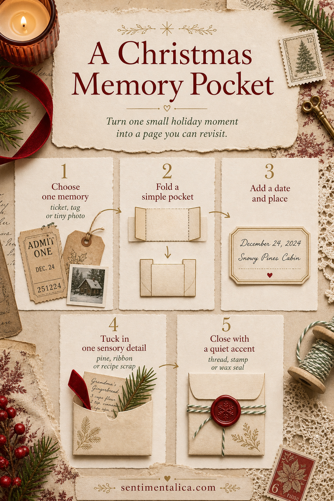

Christmas junk journals become meaningful when they hold evidence of an actual day: a café receipt, a recipe in someone’s handwriting, a gift tag, or ribbon from a carefully wrapped parcel.

Choose the memory before the decoration
Begin with one object and ask what it remembers. If it is a ticket, note who went with you. If it is a recipe scrap, record the smell in the kitchen. This keeps the page personal even when its materials use familiar Christmas symbols.
Fold a pocket that is slightly larger
Use medium-weight paper and allow a narrow margin around the keepsake. Fold the side tabs first, then the bottom tab, and test the object before gluing. Keep the opening loose enough that the item can be removed safely.
Add one sensory clue
A tiny pine clipping, photocopied recipe line, or phrase such as “orange peel and candle wax” can return you to the day faster than extra ornament. Choose one clue, then close with thread, a stamp, or a wax-colored paper circle. Date the pocket somewhere visible.
Visuals in this article were created with AI assistance and art-directed for Sentimentalica.
Browse more seasonal making ideas in the Sentimentalica journal archive.